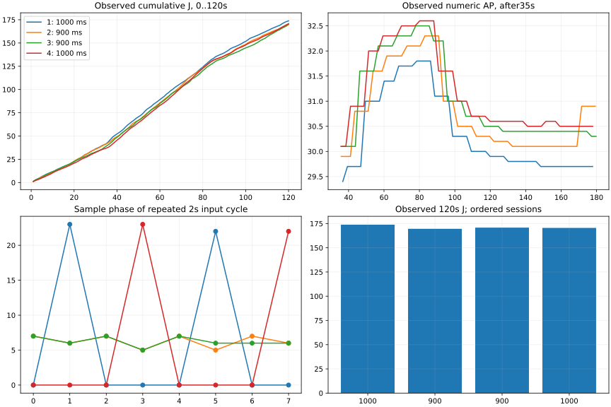
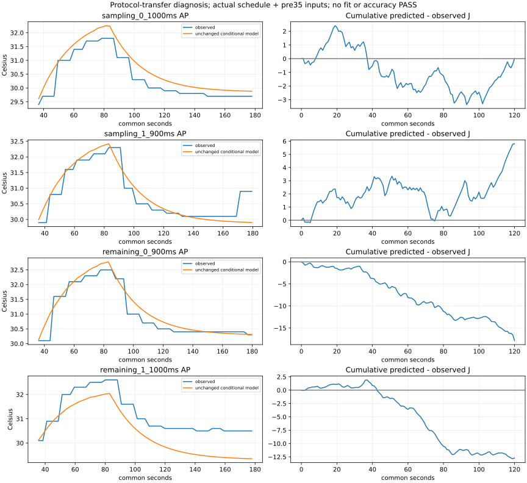

두 실행 묶음 · 냉각 중단1세션 별도 보존 · 계수 적합0 · experiment_ready=false
900ms−1000ms 차이 −4.200J / +0.300J. 조회 주기 변경만으로 기존 에너지 오차가 해결되지는 않았습니다.
관측120초 에너지는169.614–173.814J, 기존 동결식 차이는−17.871–+5.803J입니다. 20초 전력 관측을120초의 고정 배경으로 쓰는 가정의 민감도가 남았습니다. 실제 물리 원인과 일반적인 보정량을 식별한 것은 아닙니다.

실제 일정과 부하전 입력을 사용했습니다. 계수 보정·정확도 합격·정책 우월성 선언은 없습니다.

세션표 · 방향을 보존한 차이 · 기존 모형 오차 · 실패 포함 소비/종료 · 재현·한계